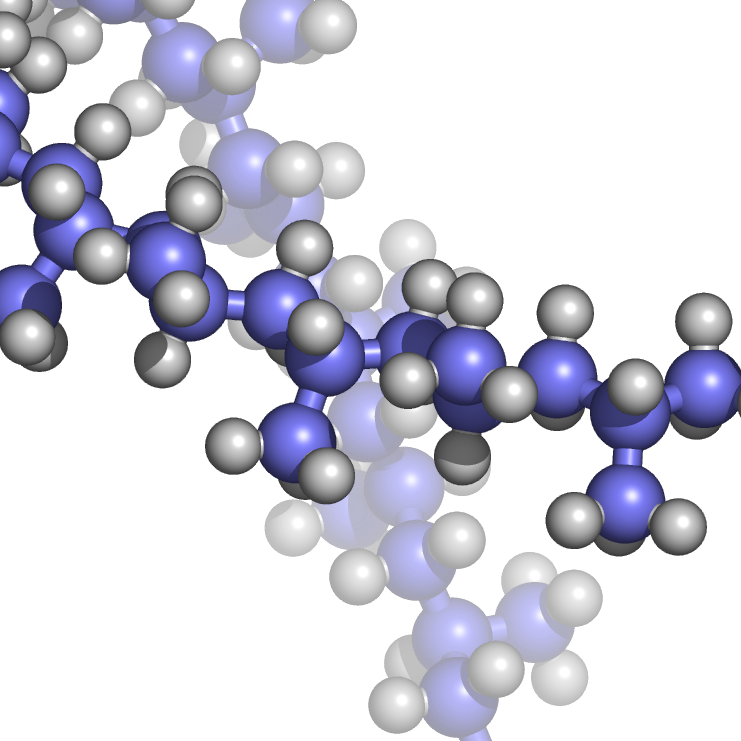

Kunststoffe
Kunststoffe bestehen hauptsächlich aus Makromolekülen. Je nach Herstellungsverfahren und zugesetzten Additiven (Zusatzstoffe) haben sie ein sehr weites Eigenschaftsspektrum. 
Beispiel Kunstoffmolekülkette
Aufgrund dieser Eigenschaftsbreite werden sie in vielen Bereichen eingesetzt
- Verpackungsindustrie
- Isolierungen
- Spielzeug
- Rohre
- Verkleidungen
- Dämmungen
- Leiterplatten
- uvm.
Diese Polymere können aus Naturstoffen oder rein synthisch gewonnen werden.
Nach Roland Geyer et al.: Production, use, and fate of all plastics ever made. In: Science Advances. Band 3, 2017, S. e1700782, doi:10.1126/sciadv.1700782 werden über 70% der Kunststoffe in Deponien gelagert und nur 9% recycled. Der Rest wird verbrannt
Unterteilbar sind sie in drei Gruppen
- Thermoplaste
- bestehen aus unvernetzten Polymeren
- häufig mit einer teilkritallinen Struktur
- sind schmelzbar und haben eine Glastemperatur
- sind im Prinzip recyclebar

- Duroplaste
- engmaschig vernetzten Polymere (Vermetzungen sind die roten Punkte)

- Elastomere
- weitmaschig vernetzten Polymere
- Weitmaschigkeit erlaubt hohe Streckungen (z.B. Gummibänder)

Thermoplast
Aggregatzustände
Bei verschiedenen Temperaturen nehmen Thermoplaste verschiedene Aggregatzustände an. Diese können dann genutzt werden, um den Werkstoff in Form zu bringen
- Fest und Thermoelastisch
- Vor dem Erwärmen und nach dem Abkühlen sind Thermoplaste fest.
- erwärmt man sie, werden sie thermoelastisch
- die Ursprungsform wird wieder eingenommen, bei Entlastung
- Thermoplastisch
- nicht formstabil
- behält nach der Abkühlung die Form
- Übergang findet an der Glastemperatur statt
- Fließfähig
- bei höheren Temperatur wird das Material fließfähig
- weitere Temperaturerhöhungen zersetzen das Material
Typische Fertigungsverfahren
- Spritzgießverfahren
- Extrusion
- Additive Fertigungsverfahren
- Blasformen
- Folienblasen
Duroplast
Im Gegensatz zu Thermoplasten können Duroplasten aufgrund ihrer hohen Vernetzung nicht mehr aufgeschmolzen werden. Hohe Temperaturen oberhalb der Zersetzungstemperatur zerstören die Bindungen (Pyrolyse).
Pyrolyse wird verwendet, um das Matrixmaterial von Verbundmaterialien zu zerstören und das Fasermaterial wiederzugewinnen.
Oft durch Polykondensation hergestellt. Findet stufenweise statt. Die Zwischenprodukte (Oligomere) der Stufen sind stabil, aber weiterhin reaktionsfähig. Diese Oligomere bilden dann final Makromoleküle.

Findet Anwendung
Elastomer
Die Glastemperatur befindet sich unterhalb des Einsatzgebiets. Elastomere können sich als thermoelastisch Verformen und finden in ihre Ursprungsform zurück. Viele Elastomere werden heutzutage künstlich hergestellt. Allerdings gibt es einen großen Markt für Naturkautschuk. Dieser wird im wesentlichen vom Kautschukbaum geerntet. Es gibt erste Anwendungen Kautschuk aus Löwenzahn zu nutzen.
Anwendungen
- Dichtringe
- Reifen
- Gummibänder
Es handelt sich um verknäulte langkettige Polymere. Unter Zugbelastung entflechten sich diese Knäule.

Wie gut dieses Entflechten geht ist durch die Zugabe von Schwefel bei der Vulkanisation beeinflusst werden.
Bei sehr tiefen Temperaturen können Elastomere glashart gefrieren. Das war die Ursache von der Challanger Katastrophe, da dort ein Dichtring außerhalb des zulässigen Temperaturbereichs angewendet wurde und nicht aufgrund der Verglasung nicht mehr abdichtete.
Vulkanisation Beschreibt den Herstellungsprozess, um thermoplastischen Naturkautschuk oder Synthesekautschuk in einen Elastomer zu wandeln. Es werden die kovalenten Bindungen (rote Punkte) zwischen den Molekülketten erzeugt. Hierzu werden Schwefel oder schwefelgebenden Stoffe im Prozess genutzt. Diese bilden die kovalenten Bindungen in Form von Schwefelbrücken. Je nach Anzahl der Schwefelbrücken werden die Eigenschaften des Elastomers beeinflusst. Es entsteht ein dauerelastischer Werkstoff. Bei Alterung werden die Schwefelbrücken durch Sauerstoffbrücken ersetzt und der Elastomer wird brüchig.
Additive
Werden genutzt um die spezifischen Eigenschaften der Kunststoffe zu beeinflussen.
Weichmacher
Veringern die Sprödigkeit, Härte und die Glastemperatur. Die Form- und Verarbeitbarkeit wird verbessert. Diese Stoffe beeinflussen die Beweglichkeit der molekularen Kettten gegeneinander.
Stabilisatoren
Diene der Verbesserung der chemischen Eigenschaften. Lebensdauererhöhung und Schutz vor UV-Strahlung, Wärme, Oxidation, Entflammung, etc.
Farbmittel
Farbstoffe (lösen sich auf molekularer Ebene) und Pigmente (unlöslich) zur Beeinflussung der Farbe oder des Reflexionsverhaltens.
Füllstoffe
Zur Verbilligung der Herstellung des Kunststoffs. Es gibt auch Füllstoffe, welche die mechanischen Eigenschaften verbessern. Beispiele sind Talkum, Sand, Kreise, Stärke, ...
Verstärkungsstoffe
Werden eingesetzt um die Kunststoffmatrizen zu verstärken. Es können Fasern oder Partikel zugesetzt werden. Glasfaser, Kohlefasern, Aramidfasern sind typische Vertreter.